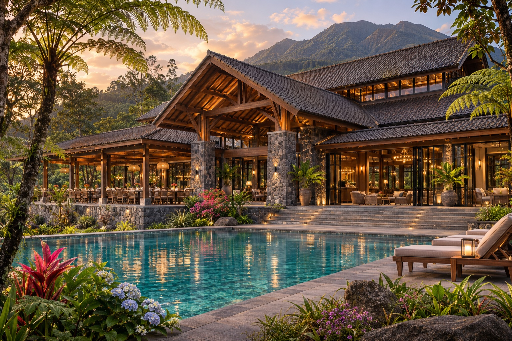
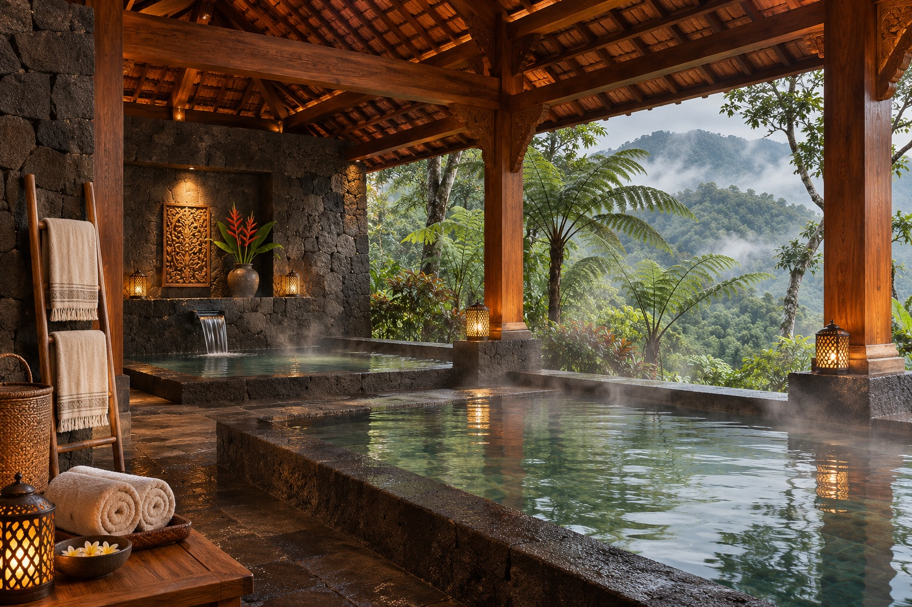
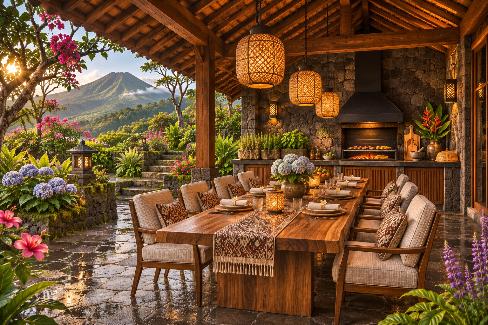

The Clubhouse / Mount Paradise
The heart of
the mountain.
Swim. Play. Restore. Gather. A shared home within your mountain sanctuary.
Discover moreA place to come together
Make a day of it.
The proposed Clubhouse anchors the 10-hectare Phase 2 community. Generous stone and timber spaces open to gardens and a full-size pool, with room for familiar faces and everyday rituals.
Movement / Open air
A swim before breakfast.
A match before lunch.
The full-size pool
Space for a proper swim, with a landscaped terrace for resting between dips and the Clubhouse just a few steps away.
The tennis court
A dedicated court is planned alongside the club facilities. Meet for a morning rally, then carry the conversation onto the terrace.

Wellness / A quieter hour
Let the world
wait a little.
Bathing pools, warm materials and garden views create the setting for a slower ritual. The proposed spa offers a quiet counterpoint to a day outdoors.
Spaces for treatments and bathing will be developed alongside the Clubhouse design.
The restaurant & café
Your favorite table.
Close to home.

Coffee after a walk. Lunch beneath the eaves. Dinner as the garden lights come on. An intimate restaurant and café is planned as part of the Clubhouse, with attentive hospitality and a relaxed mountain setting.

The members’ lounge
Stay for
the conversation.
A comfortable chair, a book and room for friends. Shared lounges and sheltered terraces make the Clubhouse a place to drop into throughout the day.
Private homes keep their own quiet rhythm, with a social world close by.
Club Membership / In development
A shared part
of mountain life.
Club Membership is envisioned as the route to the Clubhouse and its recreation and wellness facilities, complementing the privacy of your own cabin or lodge.
Membership eligibility, fees, guest access, dining and spa arrangements are being developed. Facilities shown are proposed concepts for Phase 2.
Find your mountain home